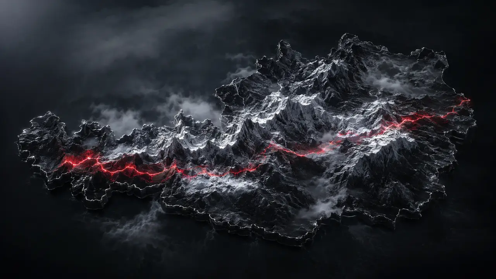
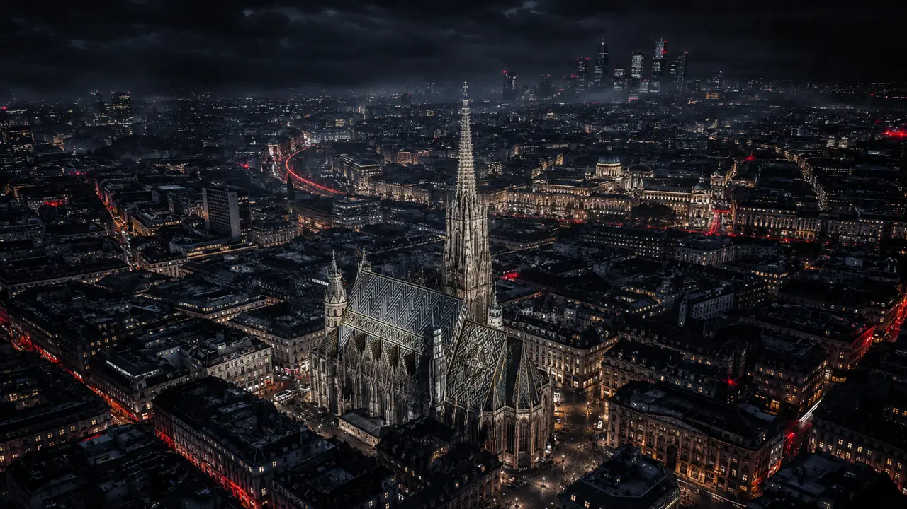
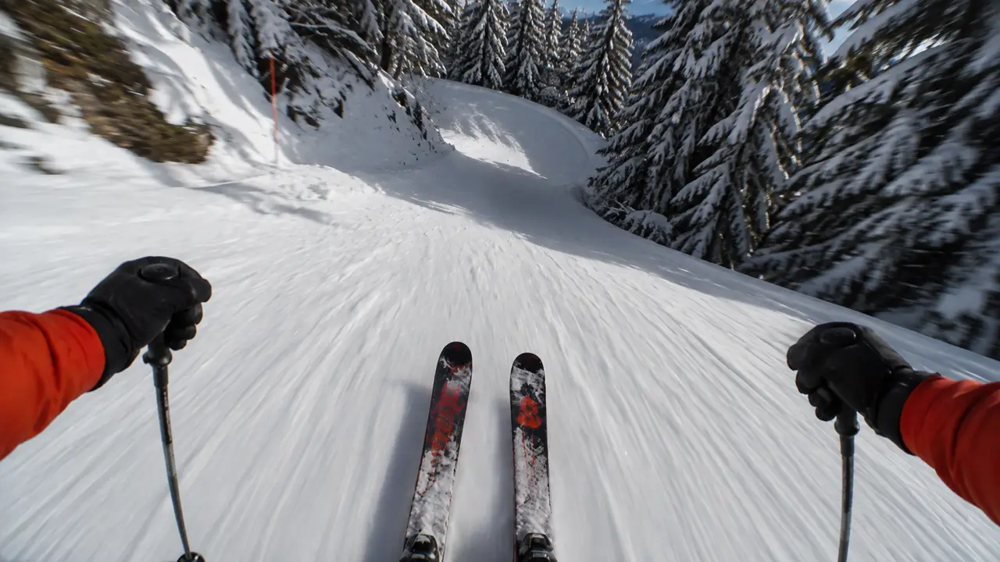
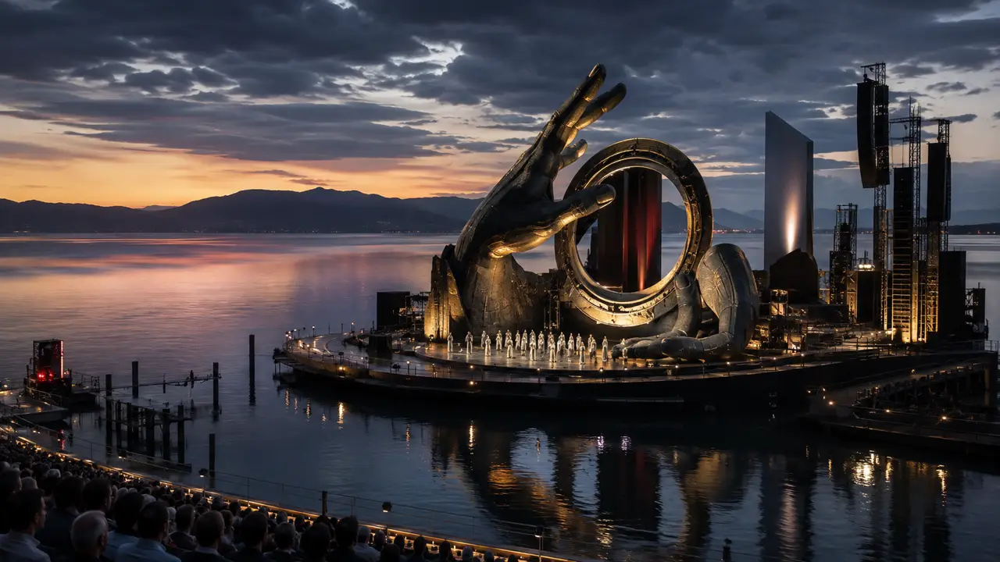

Webdesign aus Österreich · Für ganz Österreich
Schnell, sicher, barrierefrei. Gebaut von einem, der den Code selbst schreibt — nicht von einer Agenturmaschinerie. Scrollen Sie weiter — wir fahren durch das Land.

01 — Willkommen
Bei PIXELLA sprechen Sie mit der Person, die Ihr Projekt auch baut. Kein Account Management, keine Weitergabe, keine Warteschleife. 21 Jahre Webentwicklung, von der Strategie bis zur Server-Konfiguration.
02 — Webdesign
Ihre Kundschaft trifft die Website vor Ihnen — und entscheidet in Sekunden. Wir bauen keine Vorlagen, sondern Seiten mit eigener Handschrift.
Positionierung, Struktur, Botschaft. Der Plan, der den Rest günstig macht.
Im Browser entworfen, nicht in einer Präsentation. Sie sehen früh Echtes.
Sauberer eigener Code — Astro, headless CMS. Kein Plugin-Stapel.
Messwerte, SEO und Verbesserungen nach dem Launch. Monatlich, nachvollziehbar.
03 — 3D Motion & Cinematic
Der Film läuft nicht neben der Seite — er läuft unter der Hand der Besucherin. Scroll-gesteuerte Kamerafahrten, WebGL-Hintergründe, kinetische Typografie. Genau diese Seite ist das Beispiel: acht Panels, acht Filme, jeder Übergang aus einer anderen Richtung.
04 — Performance
Ein Großteil der mobilen Besucher ist nach drei Sekunden weg — ohne Fehlermeldung, ohne Beschwerde. Jedes Kilobyte ist eine Entscheidung.
05 — Webshop
Astro plus headless Shopify: der Checkout hakt nicht, die Seite lädt sofort, am Handy fällt nichts auseinander. Der Umsatzverlust fehlt schon im Aufbau.
Bewährter Checkout, freies Frontend. Zahlung und Steuer bleiben Standard.
Produkt- und Preisrechner, wenn das Sortiment eine Beratung braucht.
Buchung, Angebot und Bestätigung laufen ohne Handgriff — rund um die Uhr.
06 — Sicherheit & Recht
Barrierefreiheit ist seit Juni 2025 für viele Angebote Pflicht, NIS2 verschärft die Anforderungen an Lieferanten. Beides ist kein Nachrüstteil — es gehört in den Aufbau.
Gehärtete Security-Header, Abhängigkeits-Hygiene, dokumentierte Kette.
Kontrast, Tastaturbedienung, Screenreader — geprüft, nicht behauptet.
Keine stillen Drittanbieter, keine Schriften vom fremden Server.
Barrierefreiheitserklärung und Nachweise, wenn geprüft wird.

07 — Portfolio
Photovoltaik, Gastronomie, Immobilien, Handel, SaaS — jede Seite läuft im Browser, so wie sie ausgeliefert würde. Keine Bildschirmfotos, keine Entwürfe.

08 — Kontakt
Erzählen Sie kurz, was Sie vorhaben. Sie bekommen eine ehrliche Einschätzung, einen realistischen Termin und einen Fixpreis — meist innerhalb von zwei Werktagen. Das Erstgespräch kostet nichts.